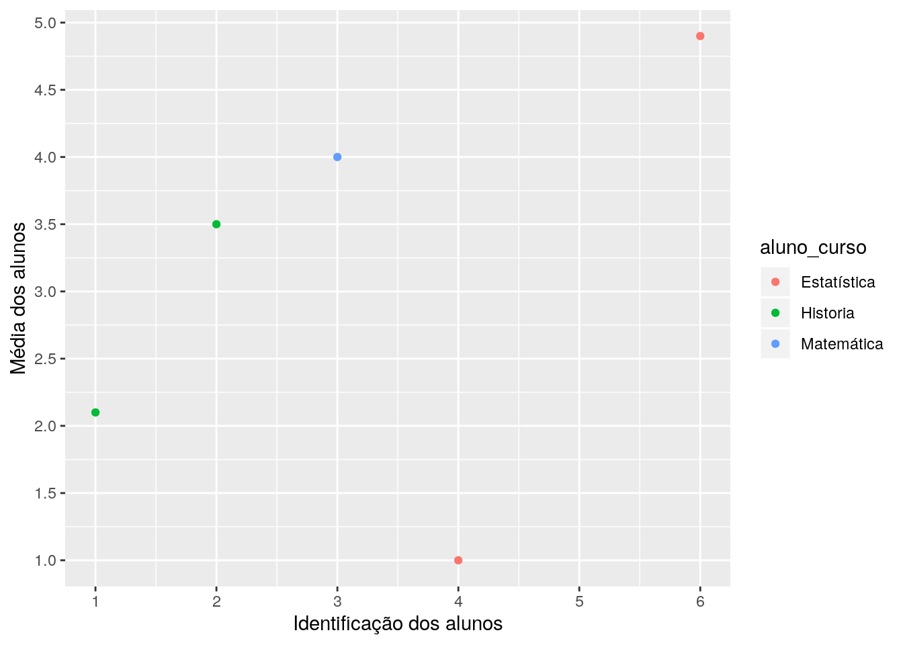
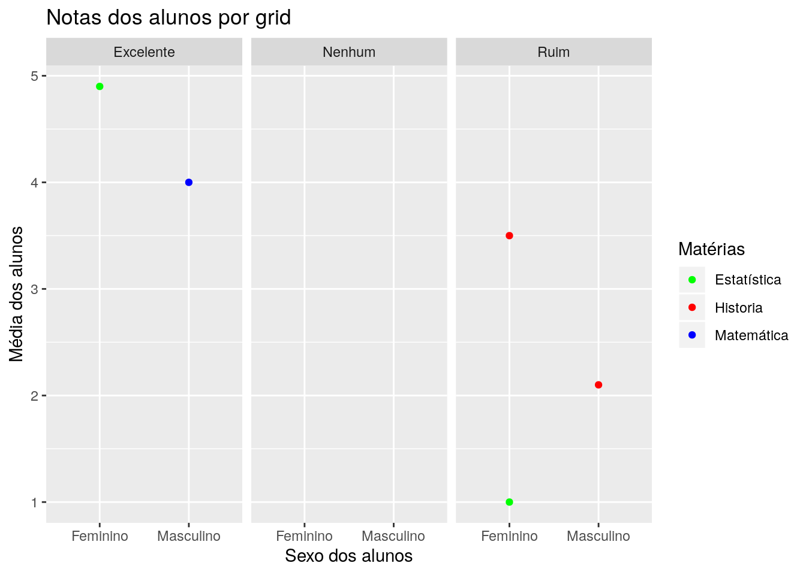
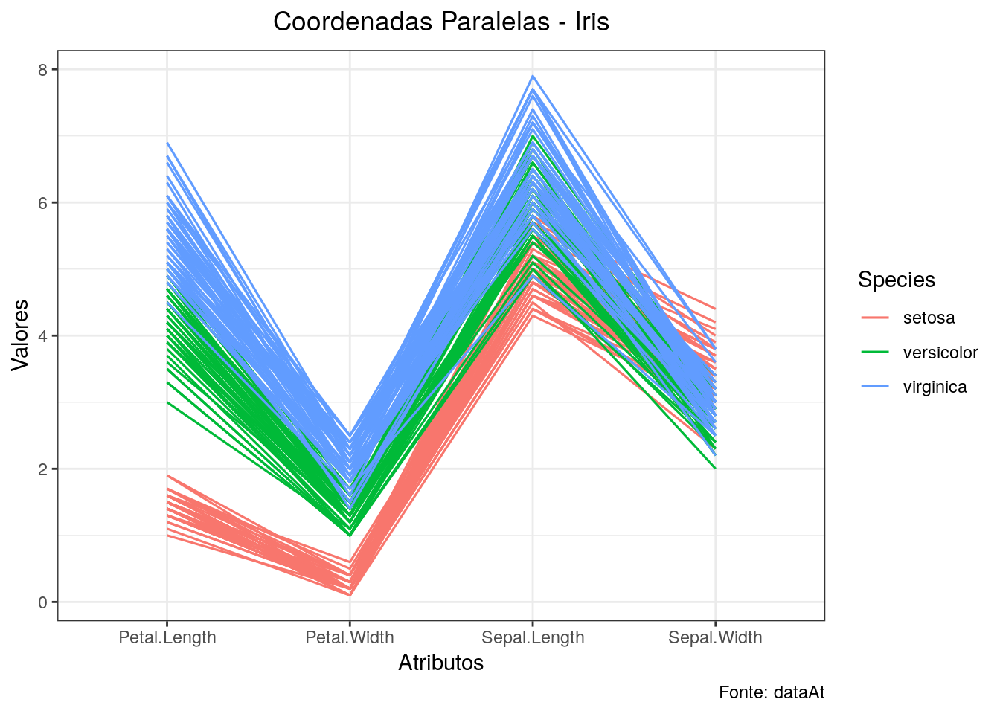

4 Introdu√ß√£o ao ggplot üìä
A visualização de dados pode ser considerada uma das mais importantes etapas do processo de análise de dados, é através dela que diversos fenômenos presentes nos dados podem ser explicados e visualizados.
Quando não souber como explicar, mostre, afinal, uma imagem vale mais que mil palavras.
Porém, criar formas de visualizar dados pode não ser uma atividade simples, muitas etapas acabam sendo necessárias. É neste contexto que entra o ggplot, uma biblioteca de alto nível, criada para tornar o processo de visualização de dados mais simples, possuindo implementações em R com o pacote ggplot2 e em Python com o pacote plotnine, ambos completamente compativeis.
Esta seção apresenta os conceitos básicos necessários para a utilização do ggplot.
Os exemplos abaixo serão apresentados em R, mas você pode sem nenhum problema executar os códigos em Python através da biblioteca
plotnine.
4.1 O que é o ggplot?
Bom, ggplot é um pacote em R criado por Hadley Wickham e seus colaboradores, como mencionado anteriormente, sua sintaxe se baseia na obra The Grammar of Graphics. Assim, a gramática dos gráficos é um conjunto de camadas, cujo o mapeamento dos atributos é chamado de aesthetics. O esqueleto pode ser escrito assim:
ggplot(data = <DATA>, aes(<MAPPINGS>)) +
<GEOM_FUNCTION>(
mapping = aes(<MAPPINGS>),
stat = <STAT>,
position = <POSITION>
) +
<COORDINATE_FUNCTION> +
<FACET_FUNCTION> Vamos explicar linha por linha do c√≥digo acima. Vamos lá üßÆ.
4.2 Mapeamento Estético
A estética refere-se a cada aspecto de um dado elemento gráfico. Descrevemos as posições (position) por um valor x e y, mas outros sistemas de coordenadas são possíveis. É possível alterar a forma (shape), tamanho (size) e cor (size) dos elementos (Wilke 2019). A imagem abaixo, retirada do livro do Wilke (2019), mostra os componentes do mapeamento estético.

Vamos começar criando um Data frame, deste modo:
# importação do pacote tibble
library(tibble)
escola <- tibble::tibble(
aluno_id = c(1, 2, 3, 4, 5, 6),
aluno_sexo = c("Masculino", "Feminino","Masculino", "Feminino", "Masculino", "Feminino"),
aluno_curso = c("Historia", "Historia", "Matemática",
"Estatística", "Matemática", "Estatística"),
aluno_media = c(2.1, 3.5, 4.0, 1.0, NA, 4.9),
aluno_avaliacao = c("Ruim", "Ruim", "Excelente",
"Ruim", "Nenhum", "Excelente"))| aluno_id | aluno_sexo | aluno_curso | aluno_media | aluno_avaliacao |
|---|---|---|---|---|
| 1 | Masculino | Historia | 2.1 | Ruim |
| 2 | Feminino | Historia | 3.5 | Ruim |
| 3 | Masculino | Matemática | 4.0 | Excelente |
| 4 | Feminino | Estatística | 1.0 | Ruim |
| 5 | Masculino | Matemática | NA | Nenhum |
| 6 | Feminino | Estatística | 4.9 | Excelente |
Agora, vamos mapear os atributos do nosso Data Frame escola, desta forma:
# Importação do pacote ggplot2
library(ggplot2)
# Mapeamento estético
ggplot(escola, aes(x=aluno_id, y=aluno_media, color=aluno_curso))
Bom, agora que mapeamos nossos atributos é possível ver que no eixo x está escrito aluno_id e no eixo y está escrito aluno_media.
4.3 Objetos geométricos
Os objetos geométricos representam os objetos a serem adicionados no gráficos, por exemplo, pontos (geom_point), colunas (geom_col), linha (geom_line). Observe que, os objetos geométricos são sufixos do métodos geom_. A tabela abaixo, retirada do livro Ciência de dados em R, mostra os tipos geométricos mais comuns:
| Tipo | Objeto Geométrico |
|---|---|
| Dispersão (scatterplot) | geom_point() |
| Gráfico de pontos | geom_point() |
| Gráfico de barras Histograma | geom_bar() e geom_col()
geom_histogram() |
| Boxplot | geom_boxplot() |
| Densidade | geom_density() |
| Gráfico de linhas | geom_line() |
Vamos utilizar geom_point para fazer um gráfico de pontos no conjunto de dados, deste modo:
# Adição de um objeto geométrico
ggplot(escola, aes(x=aluno_id, y=aluno_media, color=aluno_curso)) +
geom_point(na.rm = TRUE) Olha que legal. No entanto, ainda faltam informações no nosso gráficos, por exemplo, no eixo x não sabemos se começa com 0 ou 1 e o nome dos atributos não estão informativos.
4.4 Escalas
Bom, agora é a hora de melhorar nosso gráfico, que por sinal está bem estranho, vamos lá!
O ggplot cria as escalas de forma automática, no entanto, é interessante ajustar as escalas para manter o gráfico mais fidedigno em relação aos seus eixos.
Primeiro, vamos mudar o nome dos nossos atributos em cada eixo e também alterar as escalas:
# Adição de escalas no eixo x e y
ggplot(escola, aes(x=aluno_id, y=aluno_media, color=aluno_curso)) +
geom_point(na.rm = TRUE) +
scale_x_continuous(name = "Identificação dos alunos", breaks = 1:6) +
scale_y_continuous(name="Média dos alunos", breaks = seq(1, 6, 0.5))Como as variáveis utilizadas são contínuas, podemos utilizar a função scale_x_continuous. Caso seja uma variável categórica, por exemplo, o nome dos alunos, usamos scale_x_discrete.
Ainda falta mais informações, por exemplo, o título do nosso gráfico e melhorar a legenda.
# Definição de cores para cada disciplina
cores <- c("Estatística" = "green",
"Historia" = "red",
"Matemática" = "blue")
# Alteração da legenda e adição de um título
ggplot(escola, aes(x=aluno_id, y=aluno_media, color=aluno_curso)) +
geom_point(na.rm = TRUE) +
scale_x_continuous(name = "Identificação dos alunos", breaks = 1:6) +
scale_y_continuous(name="Média dos alunos", breaks = seq(1, 6, 0.5)) +
scale_color_manual("Disciplinas", values = cores) +
ggtitle("Média dos alunos da faculdade")
√â poss√≠vel observar que o aluno com id 5 não possui m√©dia em nenhuma disciplina. Agora, que tal dividirmos nosso gráfico em sub gráficos? üÜí.
4.5 Subplots (facet)
Podemos dividir nosso gráfico em subgráficos utilizandos as funções facet_grid e facet_wrap:
-facet_grid: Forma uma matriz de painéis definidos por linhas e colunas. É mais útil quando se tem duas variáveis discretas, e todas as combinações das variáveis existem nos dados.
-facet_wrap: Converte painéis de uma dimensão para duas dimensões.
Definições retiradas da documentação e do livro Oliveira, Guerra, and Mcdonell (2018).
# Definição de cores para cada disciplina
cores <- c("Estatística" = "green",
"Historia" = "red",
"Matemática" = "blue")
# Craiação de subgráficos pela avaliação de cada aluno
ggplot(escola, aes(x=aluno_sexo, y=aluno_media, color=aluno_curso)) +
geom_point(na.rm = TRUE) +
facet_grid(~ aluno_avaliacao) +
labs(title="Notas dos alunos por grid",
x = "Sexo dos alunos",
y = "Média dos alunos") +
scale_color_manual("Matérias", values = cores)Usamos o labs para mostrar que essa função também altera o nome dos eixos e o título
4.6 Temas
Por último, vamos deixar nosso gráfico mais elegante, usando os temas do próprio pacote:
# Definição de cores para cada disciplina
cores <- c("Estatística" = "green",
"Historia" = "red",
"Matemática" = "blue")
# Adição do tema "theme_bw()"
ggplot(escola, aes(x=aluno_id, y=aluno_media, color=aluno_curso)) +
geom_point(na.rm = TRUE) +
scale_x_continuous(name = "Identificação dos alunos", breaks = 1:6) +
scale_y_continuous(name="Média dos alunos", breaks = seq(1, 6, 0.5)) +
scale_color_manual("Matérias", values = cores) +
ggtitle("Média dos alunos da faculdade") +
theme_bw()
4.7 Exemplos
Nesta subseção vamos usar conjuntos de dados reais para demonstrar o uso do ggplot2 com mais exemplos.
4.7.1 Gráfico de coordenadas paralelas
# importação dos pacotes usados
library(tidyr)
library(dplyr)
# Uso dos dados da iris
data("iris")
# Criação do gráfico de coordenadas paralelas
iris %>% dplyr::mutate(id = 1:nrow(iris)) %>% # Criação de um atributo id
tidyr::gather(atributos, valores, -Species, -id) %>% # Transformando em wide para long
ggplot(., aes(x = atributos, y = valores, color = Species, group = id)) + # mapeamento estético
geom_line(size=0.55) + # Objeto geométrico
labs(x = "Atributos",
y = "Valores",
title = "Coordenadas Paralelas - Iris",
caption = "Fonte: dataAt") + # legendas
theme_bw() + # Adição do tema "theme_bw()"
theme(plot.title = element_text(hjust= 0.5, margin = margin(b = 7))) 
Assim como apresentado anteriormente, podemos dividir nosso gráfico em subgráficos, desta forma:
# Criação do gráfico de coordenadas paralelas
iris %>% dplyr::mutate(id = 1:nrow(iris)) %>%
tidyr::gather(atributos, valores, -Species, -id) %>%
ggplot(., aes(x = atributos, y = valores, color = Species, group = id)) +
geom_line(size=0.55) +
facet_grid(~Species) +
labs(x = "Atributos",
y = "Valores",
title = "Coordenadas Paralelas - Iris") +
theme_bw() +
theme(plot.title = element_text(hjust= 0.5, margin = margin(b = 7)),
axis.text.x = element_text(angle = 90)) 
Observe que, todos os conteúdos abordados neste livro estão sendo utilizados nos gráficos apresentados acima.
4.8 Gráfico de colunas
Para criar nosso gráfico de colunas vamos utilizar o conjunto de dados de tempestade, desta forma:
# Importação dos dados como variável de ambiente
storms <- dplyr::storms
# Visualização dos dados
head(storms, 5)## # A tibble: 5 x 13
## name year month day hour lat long status category wind pressure
## <chr> <dbl> <dbl> <int> <dbl> <dbl> <dbl> <chr> <ord> <int> <int>
## 1 Amy 1975 6 27 0 27.5 -79 tropi… -1 25 1013
## 2 Amy 1975 6 27 6 28.5 -79 tropi… -1 25 1013
## 3 Amy 1975 6 27 12 29.5 -79 tropi… -1 25 1013
## 4 Amy 1975 6 27 18 30.5 -79 tropi… -1 25 1013
## 5 Amy 1975 6 28 0 31.5 -78.8 tropi… -1 25 1012
## # … with 2 more variables: ts_diameter <dbl>, hu_diameter <dbl>Para mais informações do conjunto de dados, basta utilizar
?dplyr::storms
Como podemos observar, o dado consiste em um série temporal de tempestades registradas. Qual é o tipo de tempestade mais recorrente?
# Temas para o pacote ggplot2
library(cowplot)
library(forcats)
storms %>% dplyr::group_by(status) %>%
dplyr::summarise(count = n()) %>%
dplyr::mutate(status = forcats::fct_reorder(status, count)) %>%
ggplot(., aes(x = status, y = count)) +
geom_col(width = 0.5) +
theme_minimal_hgrid() +
labs(x = "Tipos de tempestade",
y = "Quantidade",
title = "Gráfico de colunas - Storms") +
theme(plot.title = element_text(hjust= 0.5, margin = margin(b = 7)))O pacote ggplot2 possui diversas extensões oficiais, as quais implementam diversos métodos de visualização. No próximo exemplo vamos usar a extesão Lemon.
4.9 Extensão do ggplot2 - Lemon
Nesta subseção vamos utilizar os dados dos preços de diamantes, podemos importá-lo desta forma:
# Importação do conjunto de dados como variável de ambiente
diamonds <- ggplot2::diamonds
# Visualização das cinco primeiras observações
head(diamonds, 5)## # A tibble: 5 x 10
## carat cut color clarity depth table price x y z
## <dbl> <ord> <ord> <ord> <dbl> <dbl> <int> <dbl> <dbl> <dbl>
## 1 0.23 Ideal E SI2 61.5 55 326 3.95 3.98 2.43
## 2 0.21 Premium E SI1 59.8 61 326 3.89 3.84 2.31
## 3 0.23 Good E VS1 56.9 65 327 4.05 4.07 2.31
## 4 0.290 Premium I VS2 62.4 58 334 4.2 4.23 2.63
## 5 0.31 Good J SI2 63.3 58 335 4.34 4.35 2.75Vamos utilizar os atributos cut, price e clarity, correspodentes a qualidade do corte do diamente, ao preço e a medição de qualidade, respectivamente.
# importação do pacote Lemon
library(lemon)
# Definição da semente para garantir reprodutibilidade
set.seed(123)
# amostragem dos dados
amost <- sample(c(1:nrow(diamonds)), nrow(diamonds)*0.1, replace = FALSE)
amost_diam <- diamonds[amost,]
amost_diam %>%
ggplot(., aes(x = as.factor(cut), y = price, color = clarity)) +
geom_point(position=position_jitter(width=0.08)) +
coord_flex_cart(bottom=brackets_horisontal(), left=capped_vertical('both')) +
theme_light() +
theme(panel.border=element_blank(), axis.line = element_line(),
plot.title = element_text(hjust= 0.5, margin = margin(b = 7))) +
labs(x = "Qualidade do corte",
y = "Preço em US",
title = "Gráfico de bolhas - Diamonds")Bom, sabemos que o ggplot √© bem completo, mas, s√≥ abordamos uma pequena parcela. Com o tempo vamos adicionando mais materiais. Para se aprofundar no pacote, veja nossas análises no dataAt üíÉ.
4.10 Para saber mais
Alguns links úteis